SQL Server: unit testing in Visual Studio
Wherever we have logic there is value in unit testing. This shouldn't be any less true just because that that logic is in a database. This post looks at how to use Visual Studio to unit test database logic in SQL Server.
Something to test
To start with we need some logic to test. The following is a table with a computed column (Axles) and a check constraint (on Wheels), plus a stored procedure (RemoveDuplicateTrucks).
CREATE TABLE Trucks (
Wheels int NOT NULL,
Axles AS (Wheels / 2)
)
GO
ALTER TABLE Trucks WITH CHECK ADD CONSTRAINT CK_Trucks CHECK (Wheels % 2 = 0)
GO
CREATE PROCEDURE RemoveDuplicateTrucks
AS
BEGIN
SET NOCOUNT ON;
DELETE NumberedRows FROM (SELECT
ROW_NUMBER() OVER (PARTITION BY Wheels ORDER BY Wheels) AS RowNumber
FROM Trucks) AS NumberedRows
WHERE RowNumber > 1
ENDThe test project
For the tests we need a test project in Visual Studio that is set up in a special way. This is probably possible to do directly, but I found it easiest to do by creating a SQL Server Database Project.
Create a new project and choose the SQL Server Database Project template. Then create an empty stored procedure in the project via Add in the right click menu. Alternatively, if you want to use this database project further, you can import your entire database into it.
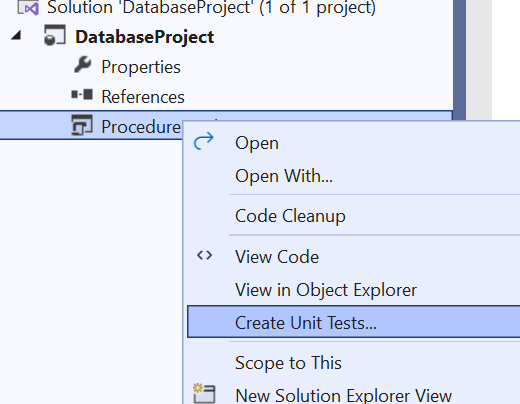Right click the stored procedure you created, or any stored procedure in your database, and choose to create unit tests.
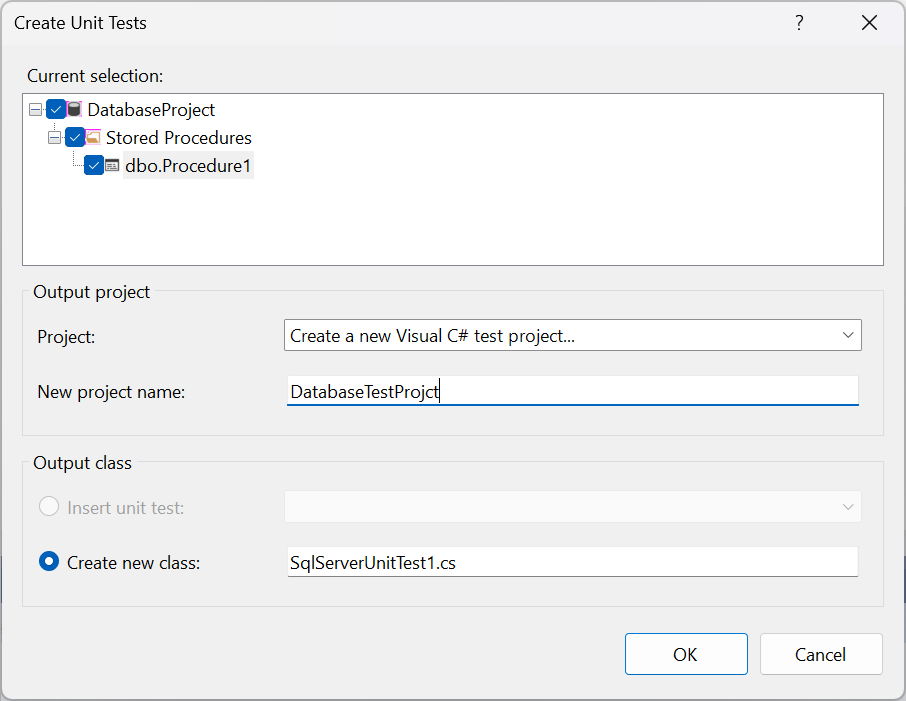Give the test project an appropriate name. Ignore the class name, we will delete it shortly, we only want the test project.
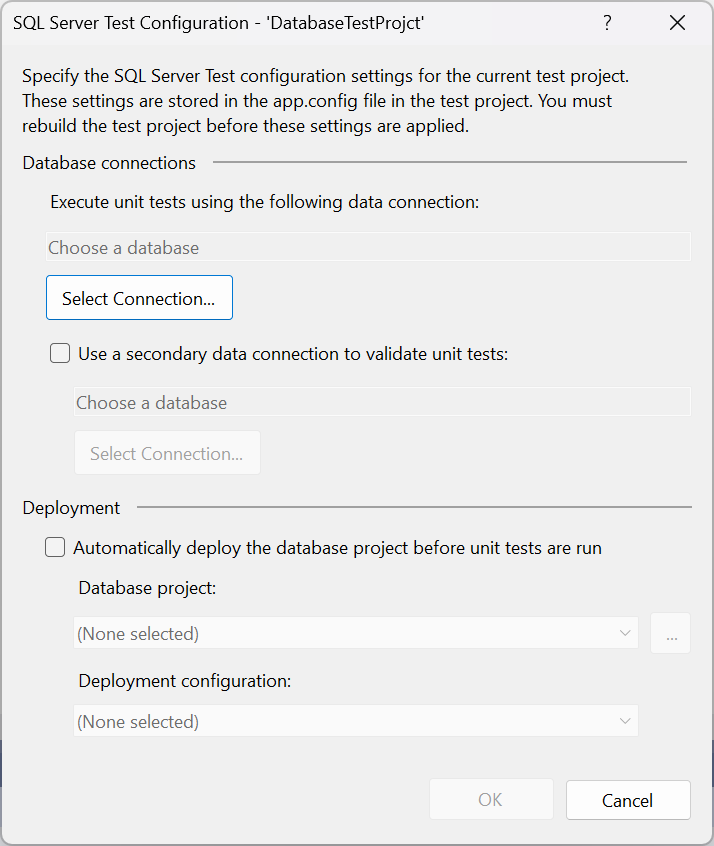Next you will be asked to connect to your database. Make sure you select a test database here as our tests will destroy data in it. If you are using the database project you can also select to have it automatically deployed before tests are run.
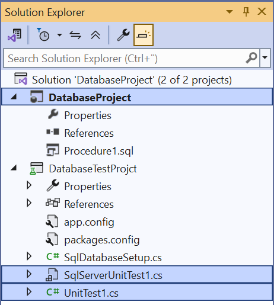Clean up the solution by removing the automatically created unit tests and the database project (unless you intend to use it). I also get a conflict regarding Microsoft.Data.Tools.Schema.Sql which I solved by removing it from the references.
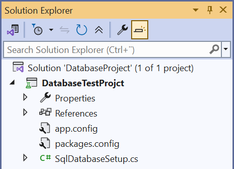You should now have a properly setup database test project. This is a .NET Framework project, support for the same thing in .NET is on its way in the form of SQL Server Data Tools, SDK-style which is currently in preview.
The tests
We are finally ready to actually test something. Create a new test class by right clicking the test project and add a new item.
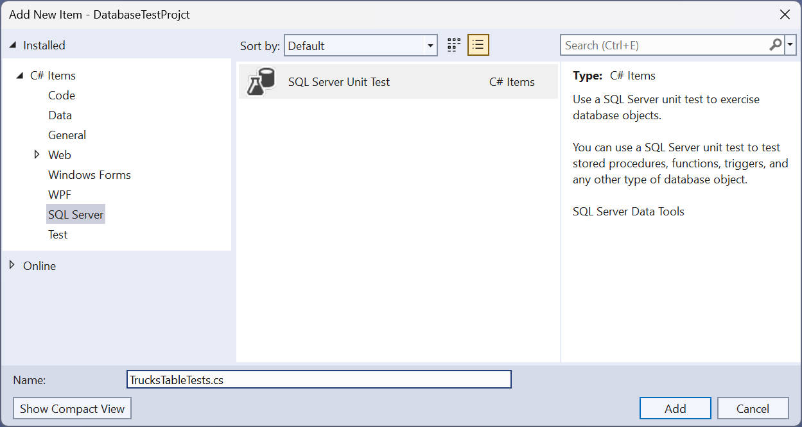Select SQL Server Unit Test and give it an appropriate name.
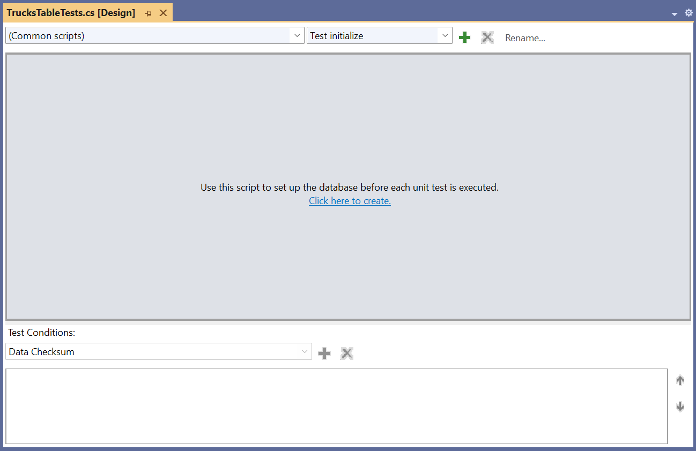Delete the automatically created test by clicking the red X at the top. Select Test initialize in the drop down and click the link in the middle of the screen.
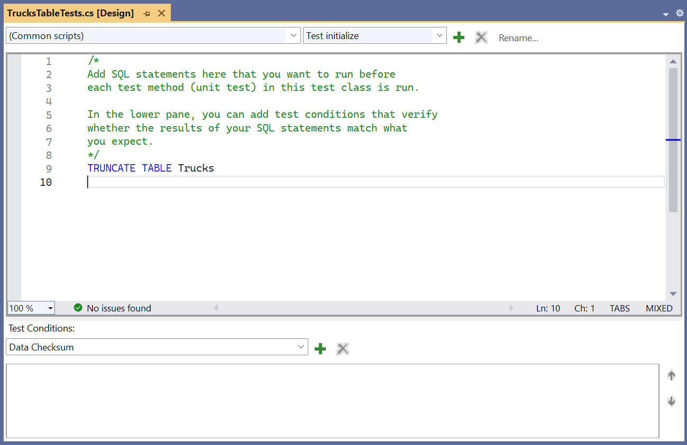In the test initialize we truncate the Trucks table so that every test will start with an empty table. I recommend leaving the data in the table after each test since it makes debugging easier. Now click the green + at the top to create three tests as shown and described below.
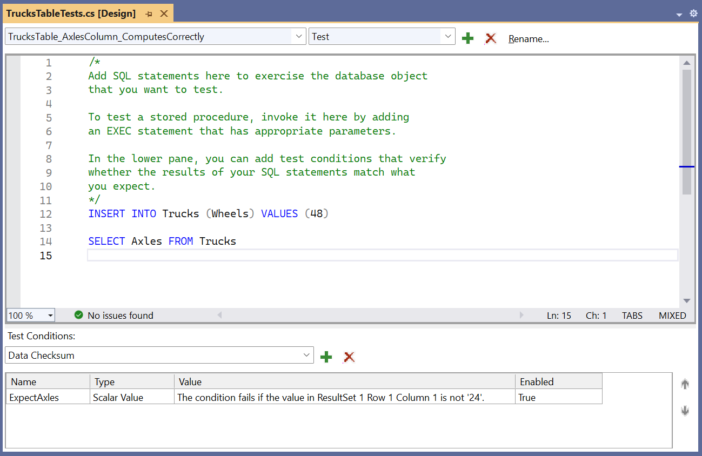The first test checks that the computed column Axles returns 24 after inserting a row into Trucks with the value for the Wheels column set to 48. The SQL script part of the test is used to arrange and act while the assert part of the test is done partly in the SQL script but mostly in the form of test conditions in its own part of the GUI at the bottom.
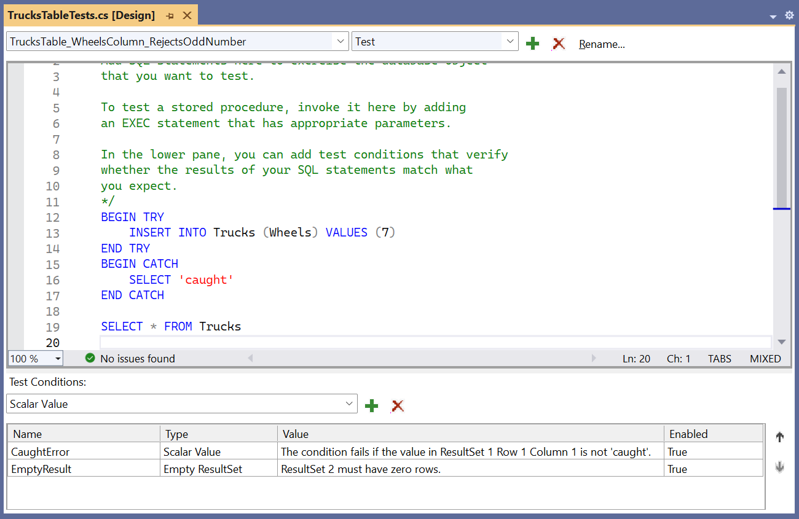In the second test we try to insert an odd number in the column Wheels, which is not allowed by the check constraint. The test conditions can handle multiple result sets, here it checks that the first contains the value 'caught' and that the second contains no rows (i.e. the insert failed).
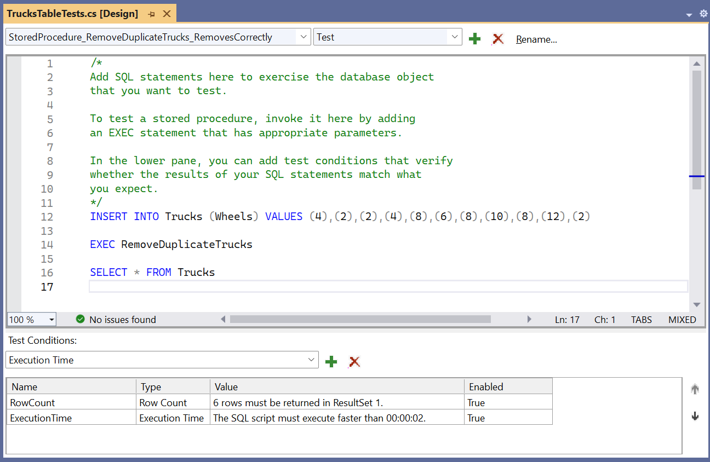This test checks that the correct number of rows remain after removing duplicates, but it also checks that the execution time for the stored procedure is less than 2 seconds. I suspect unit test purists do not like this non-deterministic test condition, but it is useful for regression testing.